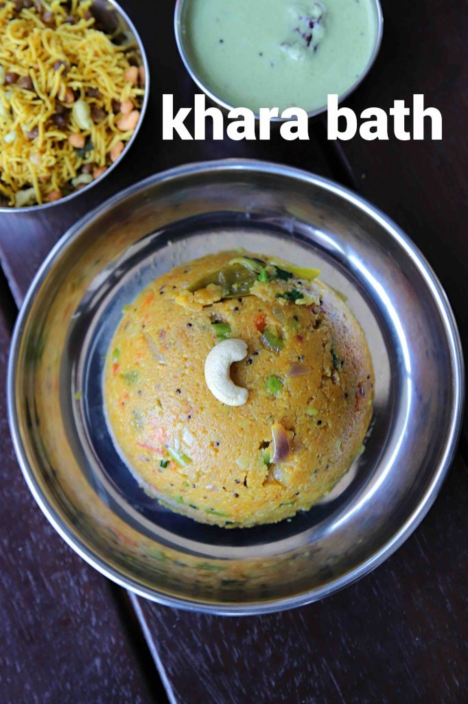

Kharabath

Description
Kharabath is a traditional South Indian dish that is a
popular breakfast and street food snack. It is a mildly
spiced dish made from rava (semolina) and mixed with
vegetables and tomatoes. It is typically served with
kesari bath and coconut chutney. It is a simple and
tasty recipe that can be made quickly and is popular
in the state of Karnataka. It can be served as a breakfast
or dinner and is different from the plain upma by adding
some special ingredients to make it taste delicious.
There are different variations of this recipe and the
consistency of the dish is different based on the recipe.
Some are spicy and runny while others are mild and soft
textured. This recipe shares how to make hotel style
kharabath with vegetables and tomatoes.
Ingredients
- ½ cup rava / semolina / suji (coarse)
- 2 tbsp ghee / clarified butter
- 1 tsp mustard
- 1 tsp urad dal
- 1 tsp chana dal
- 10 cashew / kaju (halves)
- few curry leaves
- ½ onion (finely chopped)
- 1 inch ginger (finely chopped)
- 1 chilli (slit)
- 1 tomato (chopped)
- ¼ capsicum (chopped)
- 3 beans (chopped)
- ½ carrot (chopped)
- 2 tbsp peas / matar
- 1 tsp salt
- ¼ tsp turmeric powder
- 1 tsp vangi bath masala powder
- 1½ cup water
- 2 tbsp coconut (grated)
- 2 tbsp coriander (finely chopped)
- 1 tsp lemon juice
Steps
- firstly, dry roast ½ cup rava on low flame until it turns aromatic. keep aside.
- in a large kadai heat 2 tbsp ghee and splutter 1 tsp mustard, 1 tsp urad dal, 1 tsp chana dal, 10 cashew and few curry leaves.
- add ½ onion and saute until it shrinks slightly.
- further add 1 inch ginger, 1 chilli, slit and saute well.
- now add 1 tomato and saute until tomatoes turn soft and mushy.
- also add ¼ capsicum, 3 beans, ½ carrot, 2 tbsp peas and 1 tsp salt.
- stir fry for 2 minutes or until veggies are cooked yet crunchy.
- furthermore add ¼ tsp turmeric powder, 1 tsp vangi bath masala powder and saute until spices turn aromatic.
- pour 1½ cup water and give a good stir.
- bring to a rolling boil.
- keeping the flame on low start adding roasted rava slowly, stirring continuously in another hand.
- this helps to prevent any lumps formation.
- now mix continuously till the rava absorbs water.
- cover and simmer on low flame for 5 minutes or till upma are cooked well.
- furthermore turn off the flame and add 2 tbsp coconut, 2 tbsp coriander, 1 tsp lemon juice. mix well.
- finally, serve khara bath with coconut chutney, rava kesari or plain.